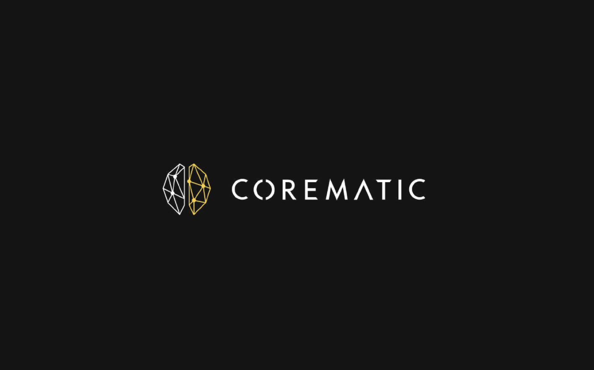
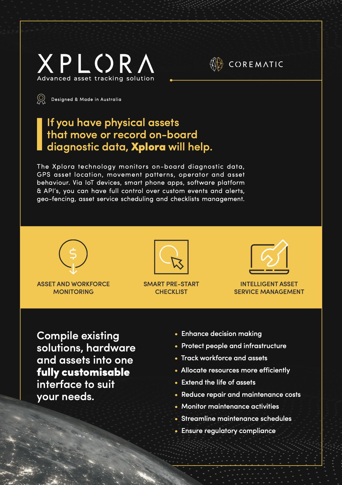
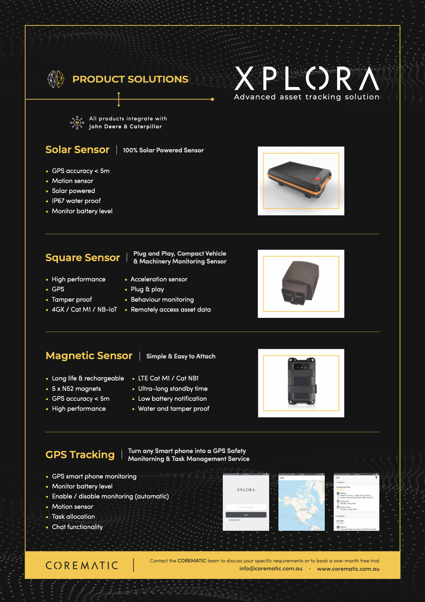
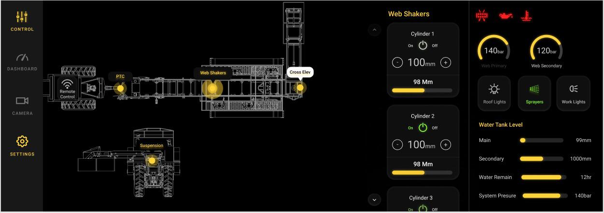
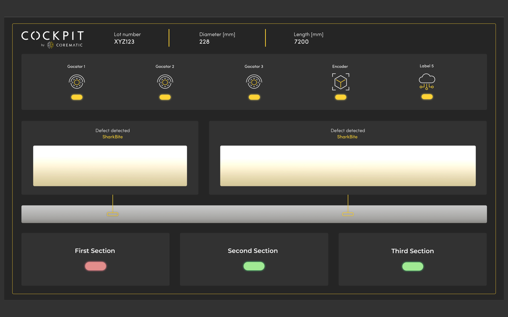

Corematic
Product Brochure & Dashboard UI

About
COREMATIC Engineering is a control systems integrator that aims to empower customers with the solutions and knowledge suitable for leading them into, and beyond, Industry 4.0. COREMATIC provide unbiased advise and expertise on leading-edge technologies, to add value to Australian businesses and lead them into the next industrial revolution with intelligent solutions. COREMATIC has partnered with ATech to design promotional materials for their advanced asset tracking solution, Xplora and to redesign the dashboard UI of the existing tracking solution, Cockpit.


Xplora Product Brochure
Prior starting with a UX task, the client has requested to put together a 2 page brochure for their new Xplora platform. It is an advance asset tracking software.
📁 View PDF

The Challenge
Corematic is developing a system to aid the operators when inspecting aluminium billets. During the inspection, the billets will pass through our array of sensors for data collection and analysis. The system then determines if the scanned billet has bends or surface defects. Once the position of the defects is sent to the user interface to be displayed to the operators. The clients currently have a dashboard developed and working properly. However, although following their style guide, it looks like the design could be improved and they wanted to know if this is something the team could help them with.

Design Process
Client has provided their style guide as well as some examples of developed dashboards they have created. The main inspiration for the project was the above image, which successfully icons and imagery to inform user about each function and colour theory to indicate certain situations.

Similar, but BETTER
The main focus of this project was to find a simple, clean and easy enough interface for operators to inspect aluminium billets without being overwhelmed by too many labels and steps.
When I designed the UX of Cockpit, I focused on what to replace than what to add to meet the sweet spot - easy for the users yet the result is aesthetically pleasing.
The whole layout looks much more balanced and the icons are replaced with more professional looking designs.
The visual hierarchy in the bottom layer used to be too wordy and heavily-weighted compared to the other two. Hence, I rearranged the numbers to be seen first so users can instantly check the quantized information first, then move on to the details.